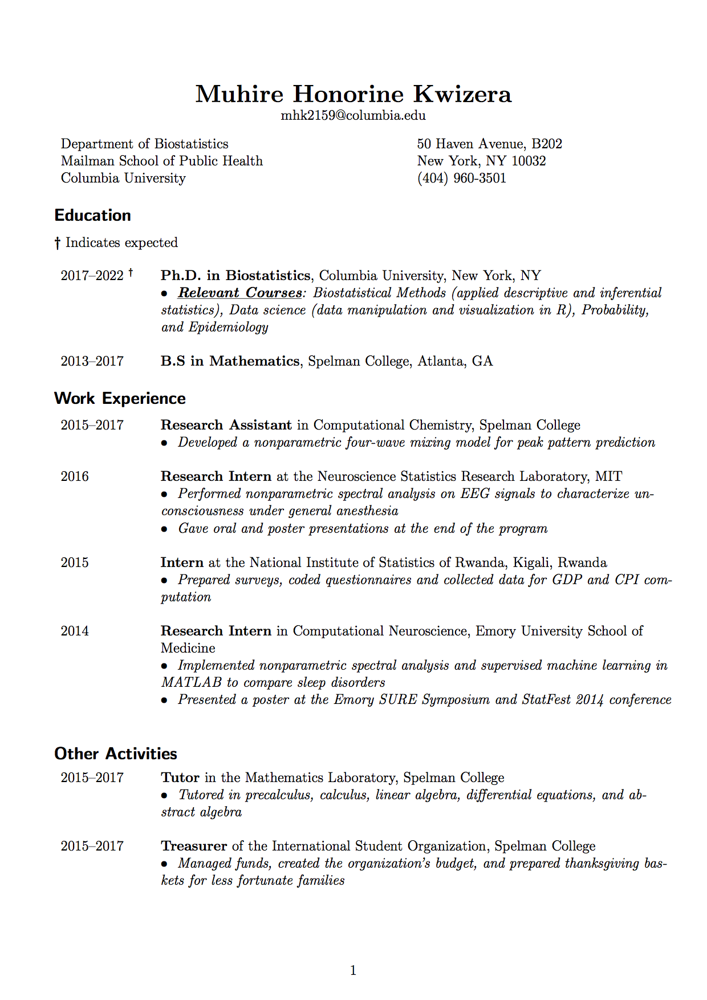
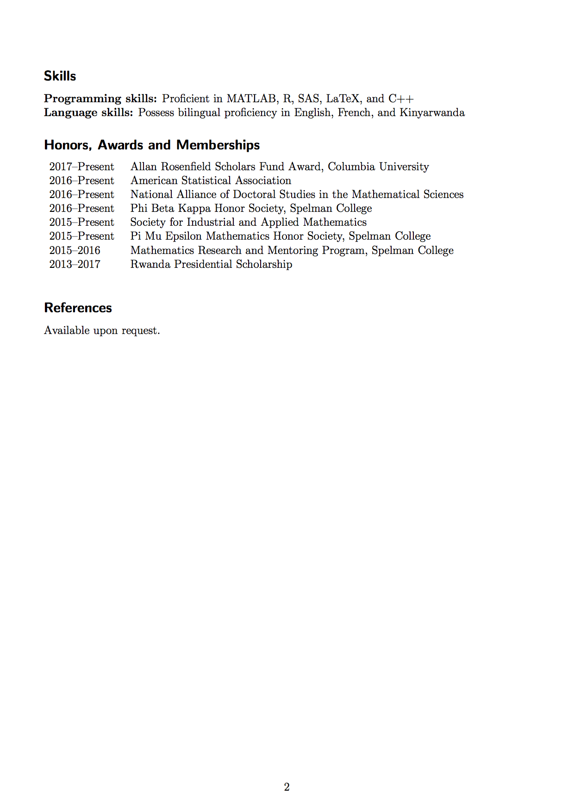

 
Department of Biostatistics
Mailman School of Public Health
Columbia University
50 Haven Avenue, B202
New York, NY 10032
2017–2022 (expected) Ph.D. in Biostatistics, Columbia University, New York, NY
2013–2017 B.S in Mathematics, Spelman College, Atlanta, GA
2015–2017 Research Assistant in Computational Chemistry, Spelman College
2016 Research Intern at the Neuroscience Statistics Research Laboratory, MIT
2015 Intern at the National Institute of Statistics of Rwanda, Kigali, Rwanda
2014 Research Intern in Computational Neuroscience, Emory University School of Medicine